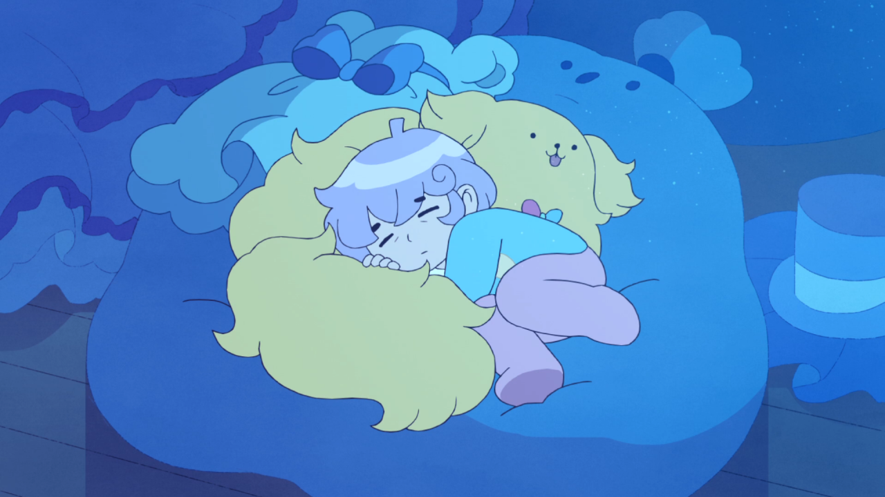

Cardamon

This little guy's name is Cardamon! He is from the series
Bee and Puppycat
found on Netflix! He is a seven year old who is a genius landlord with a cute dog named Sticky.
Reasons I like Cardamon
- He has a satisfying British Accent.
- He makes good commentary about how to raise rent as a ruthless landlord.
- He embodies the pain of having to grow up early.